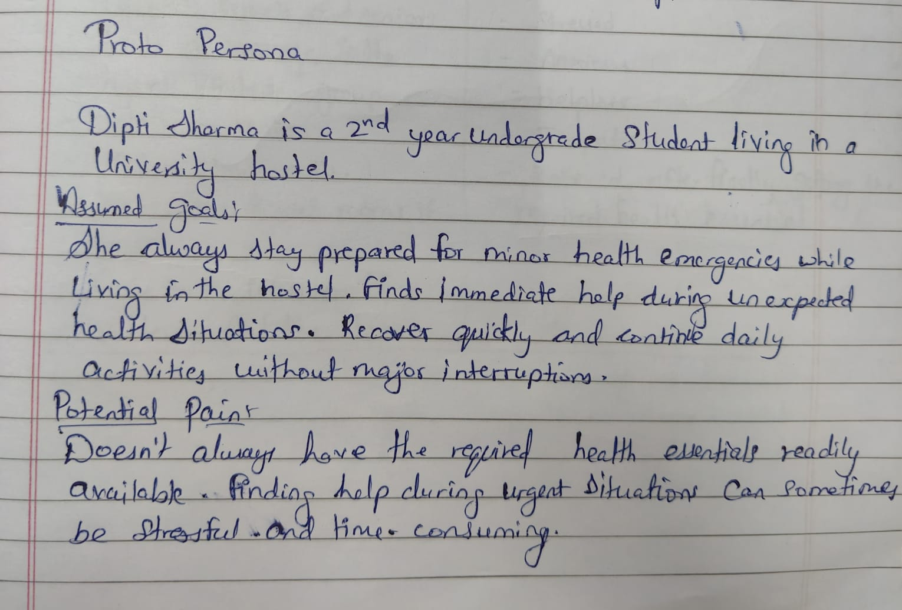

Proto-Persona
Dipti Sharma, 2nd-year undergrad
Lives in a university hostel. Assumed to always want to stay prepared for minor health emergencies and to recover quickly without interrupting daily life.
Assumed goal
Find immediate help during unexpected health situations and get back to normal fast.
Assumed pain
Doesn't always have health essentials on hand; finding help can be stressful and slow.
